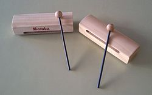

A wood block is a small slit drum made from a single piece of wood and used
as a percussion instrument. The term generally signifies the Western orchestral
instrument, though it is related to the ban time-beaters used by the Han
Chinese, which is why the Western instrument is sometimes referred to as Chinese
woodblock.
Alternative names sometimes used in ragtime and jazz are clog box and
tap box. In orchestral music scores, wood blocks may be indicated by the French
bloc de bois or tambour de bois, German Holzblock or Holzblocktrommel, or
Italian cassa di legno.
The orchestral wood-block instrument of the West is generally made from teak or
another hardwood. The dimensions of this instrument vary, although it is either
a rectangular or cylindrical block of wood with one or sometimes two
longitudinal cavities (Blades and Holland 2001).
It is played by striking it
with a stick, which produces a sharp crack (Montagu 2002b). Alternatively a
rounder mallet, soft or hard, may be used, which produces a deeper-pitched and
fuller "knocking" sound.

In a drum kit, a woodblock was traditionally mounted on a clamp fixed to the top
of the rear rim of the bass drum.
Related instruments:
Log drums made from hollowed logs, and slit drums made from bamboo, are used in
Africa and the Pacific Islands.
The muyu is a
rounded woodblock carved in the shape of a fish and struck with a wooden stick.
It is made in various sizes and is often used in Buddhist chanting, in China as
well as in other Asian nations including Japan, Korea, and Vietnam. Also in
China, a small, rectangular, high-pitched wood block called bangzi is used.
This instrument is called a temple block in a Western orchestral context.
Typically used in sets of four different pitches, they are sometimes called
"skulls" by jazz players because of their globular shape.